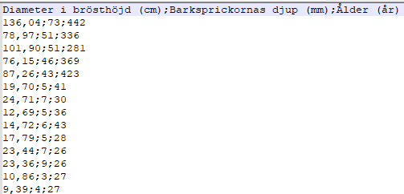
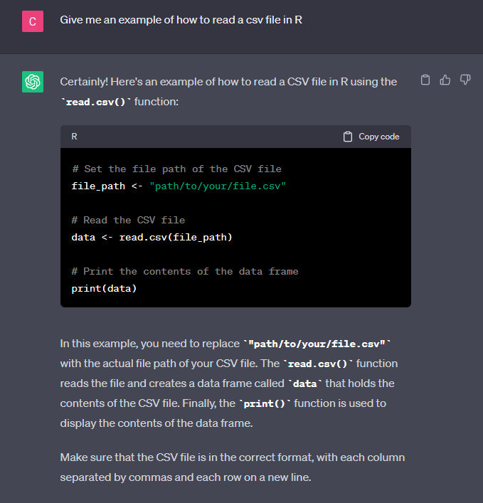

## Laddar paketet dplyr med dess tillhörande funktioner
require(dplyr)2 Paket och funktioner
Det kommer bli väldigt jobbigt om vi alltid måste skapa data för hand eller beräkna summor som a + b + c + .... Användandet av en programvara ska underlätta de statistiska beräkningarna och i den andan följer här några kapitel om hur R eller RStudio kan hjälpa till.
2.1 Paket och funktioner
Inom programmering är det vanligt att man genomför samma komplexa operation flera gånger och ett enkelt sätt att underlätta kodningen är att skapa en funktion som förkortar flera rader kod till en. Flera liknande funktioner samlas i olika paket som antingen redan är installerade på datorn eller måste installeras en gång.
Installerade paket måste också laddas till arbetsminnet för att R ska kunna använda sig utav dem. Vi kan visualisera detta som att även fast vi har köpt in en verktygslåda, måste vi ställa upp den på arbetsbänken för att kunna använda verktygen däri. Om du inte har verktygslådan bredvid dig kommer det bli svårt att använda något av verktygen. Vi kan ladda upp ett paket till arbetsminnet med hjälp av library() eller require(), där namnet på paketet anges inuti parenteserna.
Om du har en ny installation av R på datorn måste du ibland installera paket, det vill säga ladda ner paketets information från internet. Som tur är finns det en funktion för detta också, nämligen install.packages(). Skillnaden här är att namnet på paketet måste anges inom citationstecken, ex. "PAKET", istället för bara namnet som vi gjorde i require(). Om du en gång redan installerat paketet till din version av R behöver du inte installera paketetet för varje ny session utan kan direkt ladda det genom library() eller require().
## Om paketen inte finns på datorn måste de installeras.
## KÖRS ENDAST EN GÅNG I SAMBAND MED EN NY INSTALLATION ELLER UPPDATERING AV R!
install.packages("ggplot2")
install.packages("RColorBrewer")
## Laddar paketen innehållande de funktioner som vi vill använda
require(ggplot2)
require(RColorBrewer)Termen funktion har använts frekvent tidigare och kan behöva förtydligas. En funktion är en större operation, oftast flera rader kod, som sammanfattas med en rad. Vi kan använda redan inbyggda funktioner från olika paket (som vi gjort i tidigare kapitel) eller skapa en egen funktion, men vi kommer i detta underlag fokusera på att använda redan skapade funktioner. För att använda en funktion behöver vi veta namnet på funktionen och eventuella argument som funktionen behöver. Argument motsvarar inställningar eller information som behövs i operationerna som funktionen genomför. För att tilldela ett argument ett värde eller information används = till skillnad från <- i “vanlig” kodning.
funktion(argument1 = värde1, argument2 = värde2)Alla argument i en funktion omsluts av parenteser, ( och ), och detta betyder att man kan skriva funktioner på en eller flera rader. Fördelen med att skriva en funktion på flera rader är att göra det lättare att läsa av vad som egentligen händer. Notera att R dock måste ha någon form utav indikation att funktionen fortsätter, t.ex. ett , för att ange att flera argument tillkommer eller <- som tilldelar ett värde till ett objekt.1
## Skapar en numerisk vektor
vektor <-
c(
2,
3,
4,
5,
6
)R fortsätter att läsa på nästa rad om programmet inte anser att raden avslutas, i detta fall med att funktionen avslutas med ). Mer specifikt kan vi läsa av raderna en och en likt:
<-behöver ett värde att tilldela till objektetvektor, men eftersom det inte anges något värde på samma rad fortsätter R läsa av nästa rad,- Funktionen
cfår inget avslutande)så R fortsätter läsa av nästa rad, - Varje
,separerar element i vektorn, men eftersom det inte anges något ytterligare värde fortsätter R läsa av nästa rad, - Det är först när inget ytterligare element läggs till och funktionen stängs med
)som R är nöjd och inte läser vidare på efterföljande rader.
En annan fördel med att skriva funktioner på flera rader är att vi kan kommentera varje enskilda argument som används. Detta kommer vi se exempel på senare.
2.2 Ladda in datamaterial
Vid datainsamling, eller vid inhämtning av material som någon annan har samlat in, är det vanligt att vi sammanställer informationen utanför R, till exempel skulle ett arbetsblad i Microsoft Excel ge oss ett lätt sätt att strukturera information. Istället för att behöva återskapa materialet från grunden i R kan vi läsa in information från andra typer av filer på datorn.
Den enklaste formen av fil som R läser in är rena textfiler (med filändelser .txt, .csv, .dat) som på olika sätt sparat ner datans struktur på ett organiserat sätt. Vi kan läsa in informationen från dessa sorters filer till R med hjälp av specifika funktioner.
Inom statistik är det vanligt att använda kommaseparerade filer, .csv, som vi kan skapa från Excel genom menyn Spara som.... Med hjälp av funktionen read.csv och dess argument kan vi säga till R vilken struktur som filen har och få samma struktur i en data frame. Ett tips är att öppna datafilen i Notepad, Anteckningar eller annan enkel ordbehandlare för att se vilka symboler som används för att beskriva strukturen.
Exempelvis skulle en textfil kunna se ut så här:

som laddas in i R som följer:
## Laddar in datamaterialet från fil och sparar data frame i objektet ekar
ekar <-
read.csv(
## Sökvägen till filen på datorn
"dataOmEkar.csv",
## Argument för vilken symbol som används för decimaler i filen
dec = ",",
## Argument för vilken symbol som används för att separera kolumner i filen
sep = ";"
)2.3 Arbetsmappar
Att importera datamaterial är endast ett sätt där vi interagerar med datorns hårddisk. Vi kan ibland vilja spara ner objekt eller visualiseringar mer permanent och då kommer vi återigen behöva ange en sökväg till någonstans på datorn. För att underlätta denna process kan vi använda oss utav arbetsmappar (eng. working directory).
En arbetsmapp är ett sätt för oss att snabbt och enkelt ge information till R att den ska leta i en specifik del av datorns hårddisk. Om vi arbetar med ett projekt, till exempel datorlaborationer i en specifik kurs, kan det vara lämpligt att skapa en mapp på datorn där all information som hör till kursen sparas ner. Då är det också lämpligt att i R säga att denna mapp är den arbetsmapp som vi ska importera från och exportera till under en session. Vi behöver dock först veta vilken sökväg som leder oss in till mappen.
För att hitta denna sökväg, kan du öppna upp mappen i ditt operativssystems filhanterare. Du kan följa lämplig instruktion för just ditt operativsystem via någon av följande länkar:
När du väl har hittat din sökväg ska du kopiera den i sin helhet och sedan använda funktionen setwd() för att R ska spara mappen i arbetsminnet. Notera att alla \ måste bytas ut med antingen \\ eller / för att R ska kunna läsa av sökvägen korrekt. Exempelvis kan det se ut så här:
## Arbetsmappen anger en sökväg till en mapp på datorn med alla filer som ska användas
setwd("C:/Users/MIN ANVÄNDARE/MAPPENS NAMN")Vi måste lägga in sökvägen inom "sökväg" för att R ska kunna läsa av den som en textsträng och inte en massa objekt. Låt oss säga att vi har en fil i denna mapp som heter dataOmEkar.csv. Om vi inte har en arbetsmapp i sessionen behöver vi ange hela sökvägen till filen om vi ska importera den till R via read.csv("C:/Users/MIN ANVÄNDARE/MAPPENS NAMN/dataOmEkar.csv)". Däremot efter att ha kört raden kod vet R att den ska leta efter filen i arbetsmappen och vi behöver därför bara använda filens namn likt read.csv("dataOmEkar.csv"). I det långa loppet kommer arbetsmappar underlätta kodningen avsevärt om vi organiserar filer på datorn på ett strukturerat sätt. Om vi endast är intresserade av någon enstaka fil kanske vi kan klara oss att skriva den långa sökvägen en eller två gånger, men det blir lätt mycket text om fler filer behöver importeras.
2.4 Hjälpdokumentation
Att alltid komma ihåg vad R kan göra, vilka funktioner som finns, vilka argument som de behöver, är omöjligt. Som tur är finns många resurser att hjälpa oss, inte minst den interna dokumentationen.
Genom att använda ? och ett funktionsnamn letar R upp den tillhörande hjälpdokumentationen för funktionen. Den innehåller en detaljerad beskrivning av funktionens syfte, hur man använder den, vilka argument som finns och vad respektive styr, mer djupgående detaljer om funktionen och dess resultat, ytterligare referenser, och allra sist exempel när funktionen används som man kan ta inspiration från.
Läs hjälpdokumentationen för funktionen att skapa en vektor och testa några av de exempel som visas allra sist i artikeln.
?cEftersom R är open-source finns det väldigt mycket material tillgänglig på internet, detta underlag kan ses som en sådan resurs. Genom att använda en sökmotor där man beskriver det problem som man stött på eller fråga hur en funktion fungerar kommer du hitta en stor samling av sidor som säkerligen beskriver exakt det du är ute efter.
2.5 ChatGPT eller annan AI
Ytterligare en resurs som kan både hjälpa och stjälpa är ChatGPT och andra liknande AI-program. Genom att ställa frågor av olika slag till programmet kan man få resultat som dels ger kommenterad kod som (förhoppningsvis) löser det problem som man frågar efter och beskriver mer i detalj koden som den producerat.

I exemplet ovan producerar ChatGPT några rader kod som ser ut att fungera, vi måste ange sökvägen till filen i file_path och sedan används funktionen read.csv() för att läsa in datamaterialet till objektet data. ChatGPT är dock inte bra på att kontrollera sin kod och inte heller att följa viss praxis vid kodning, vilket innebär att vi aldrig får ta koden som produceras som hel sanning. Istället kan vi använda AI-program som ett sätt att inspireras eller på annat sätt lära oss olika programmeringskoncept som vi sedan tillämpar på egen hand.
Vi kommer senare se andra exempel på symboler som visar R att kodningen fortsätter på nästa rad.↩︎